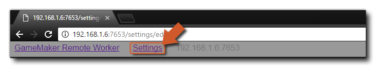

Cuando compila su juego, generalmente usa el trabajador "Local", que es la computadora en la que se instaló GameMaker Studio 2. Sin embargo, en algunas circunstancias, puede que necesite usar otra computadora para construir sus proyectos. Por ejemplo, si está trabajando en una Mac y desea construir un proyecto de Windows, entonces debería configurar un Trabajador Remoto y tener una PC con Windows para construir. Básicamente, cuando utiliza un trabajador remoto, GameMaker Studio 2 enviará todos los archivos necesarios desde la máquina (local) en la que se está ejecutando a la máquina de trabajo remota, y luego usará esa máquina para construir el ejecutable final para el proyecto (ya sea guardando en la máquina remota, o devolverlo a la máquina local después). Sin embargo, antes de que pueda utilizar esta funcionalidad, deberá instalar ciertas herramientas en la máquina de creación y realizar algunas configuraciones, que explicaremos aquí.
Para configurar un trabajador remoto, primero deberá instalar la aplicación de herramienta de construcción Remote Worker en la PC que se utilizará. Puede encontrar esta herramienta yendo al menú de compilación en GameMaker Studio 2 en la máquina local y seleccionando la opción "Mostrar instalador de trabajador remoto":
Alternativamente, puede hacer clic en el ícono "ojo" en el administrador de destino y obtener el instalador de Remote Worker de esa manera:
El instalador se llamará algo así como " GameMakerStudio-Remote-Installer-X.X.X.XXX.exe "y necesita copiarlo a la PC que desea usar como trabajador remoto (no es necesario que GameMaker Studio 2 esté instalado en el trabajador remoto, solo este programa). Una vez que lo haya copiado en la PC de construcción, instálelo siguiendo las instrucciones en pantalla y, cuando el instalador haya finalizado, el sistema operativo podrá solicitarle acceso a su red a través del firewall. Una vez que otorgue acceso, el instalador abrirá una página en su navegador web y usted debe anotar la dirección IP y el número de puerto que se muestran en esta página, ya que la necesitará para el siguiente paso.
Ahora debe volver a la máquina donde tiene instalado GameMaker Studio 2 y hacer clic en el botón Administrador de objetivos
para abrir la ventana de Administrador de objetivos, y vaya a la sección Trabajador y haga clic en el botón Agregar trabajador
. Esto abrirá la siguiente ventana:
Aquí debe darle un nombre a su Trabajador Remoto (esto es lo que se mostrará en la lista de Trabajadores en el Administrador de Objetivos) y en la sección Nombre del Host, agregue la dirección que se le mostró y anotó anteriormente en la máquina del trabajador, incluyendo el número de puerto.
Si todo ha ido correctamente, ahora debería recibir un mensaje que diga que puede conectarse con éxito a la máquina remota de trabajo. Una vez que tenga su Remote Worker instalado y conectado a su computadora IDE principal, tendrá que configurar y configurar los parámetros de compilación local para cada plataforma (consulte la sección a continuación para obtener más detalles) antes de poder compilar su proyecto.
La página de configuración muestra las diferentes rutas y configuraciones de compilación para la aplicación Remote Worker. En la parte superior de la configuración, tiene las diferentes rutas que utilizará la aplicación Remote Worker y, antes de hacer cualquier otra cosa, debe revisarlas y establecerlas en rutas alternativas si es necesario (en general, las rutas predeterminadas deberían estar bien). Puede acceder a la página de configuración de Trabajador remoto utilizando cualquiera de los siguientes métodos:
- Haga clic en el enlace "Configuración" en la parte superior de la página Trabajador remoto que se abre en el navegador de su máquina remota: 
- Use el RMB en el icono de la bandeja de Trabajador remoto para abrir la configuración en el navegador de su máquina remota:
- En su máquina local, abra el administrador de destino y haga clic en el ícono de "engranaje"
abre la configuración del trabajador en una ventana en tu máquina local:
Esto mostrará la página de configuración donde puede ver (y establecer) las diferentes opciones que le permiten establecer las rutas para construir su proyecto:
Después de verificar las rutas de acceso para la aplicación Remote Worker, puede configurar (si es necesario) las diferentes configuraciones de compilación local. Diferentes plataformas requerirán la instalación de diferentes herramientas de compilación en la PC y el trabajador remoto tendrá que poder usarlas para construir sus juegos a través de la página Configuración. La primera configuración aquí es la configuración general:
Aquí puede configurar el Puerto para el Servidor de Ayuda y el puerto para el Depurador a usar. Estos pueden cambiarse si tiene algún problema de conexión cuando usa el módulo de depuración, pero en general debería dejarse en sus valores predeterminados.
Ahora puede continuar y configurar las diferentes opciones para las plataformas para las que Remote Worker puede compilar:
- Windows
Si tiene acceso a la plataforma de destino de Windows, debe poder construir utilizando el trabajador remoto en la PC con Windows de inmediato utilizando la opción de VM. Sin embargo, si desea utilizar el YYC, también deberá establecer la ruta a Visual Studio en la PC. Para obtener todos los detalles sobre cómo configurar una PC con Windows para compilar sus proyectos, consulte el siguiente artículo de la mesa de ayuda:
Una vez que haya configurado su Trabajador remoto y haya completado la Configuración de compilación local (consulte la sección anterior), puede comenzar a utilizarla para compilar sus juegos. Para esto, se trata simplemente de seleccionar Remote Worker de la lista Target Manager, seleccionar la plataforma para probar / compilar, así como cualquier otra opción (como el tipo de compilación o la configuración), y luego presionar Play
o Crear ejecutable
.
NOTA: las plataformas disponibles en Target Manager cambiarán según las capacidades de la computadora Remote Worker, y no todos los destinos estarán disponibles. También tenga en cuenta que no existe un objetivo de "Prueba" para trabajadores remotos.
Si simplemente está jugando el proyecto, la máquina Remote Worker lo compilará y ejecutará, pero si está creando un ejecutable, entonces Remote Worker compilará el proyecto y luego devolverá un *.zip archivo a la máquina local para guardar.Cabe señalar que ni el botón Depurar
ni el botón Limpiar
estará disponible cuando se utiliza un trabajador remoto. También tenga en cuenta que solo puede realizar una construcción remota a la vez actualmente.


Una vez que tenga Remote Worker instalado y ejecutándose en su máquina remota, aparecerá en la barra de tareas como un ícono, y puede hacer clic derecho sobre él para que aparezcan las siguientes opciones: 
- Abrir: abra la aplicación Remote Worker en su navegador predeterminado.
- Mostrar registro: abra el archivo de registro para Remote Worker en su navegador.
- Configuración de red: aquí puede filtrar qué máquinas desea que puedan enviar construcciones a la máquina Trabajador remoto. Cada filtro puede ser un filtro de estilo CIDR o un nombre de host de una máquina para permitir. Debe tener en cuenta que si quiere que varias máquinas se conecten a un trabajador remoto, o si está mezclando tipos de conexión (es decir, cableado y wifi), entonces puede que necesite editar el rango de IP permitido aquí.
- Editar configuración: abra el menú de configuración de Remote Worker (explicado en la sección Configuración, arriba).
- Salir: salga de la aplicación Remote Worker. Esto significa que ya no podrá conectarse (ni compilar) con la aplicación desde un equipo local hasta que reinicie la aplicación Remote Worker.